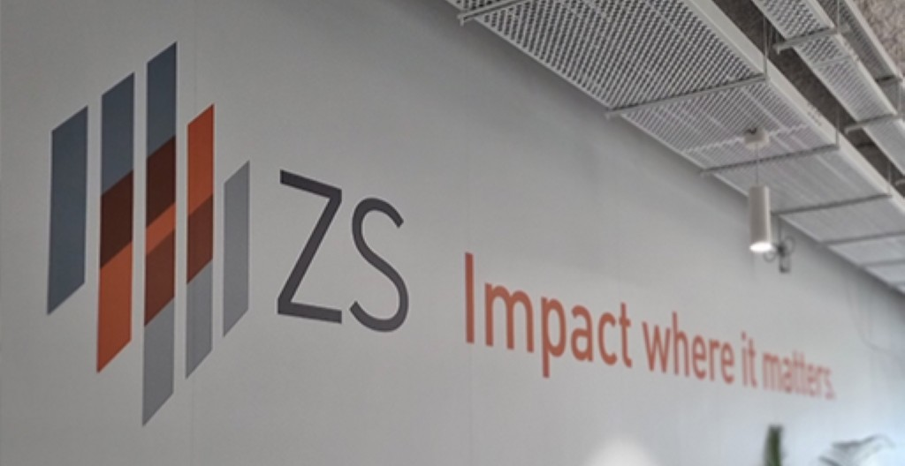

Decision Analytics Associate Consultant
ZS Associates, India (Jan 2021- May 2024)
Career Growth
ZS is a leading global consulting firm with $1B+ in annual revenue, specializing in life sciences and driving impact for Fortune 500 companies with data and analytics.
Starting as an intern, I was one of the first members of the first in-house decision science team for the client. As I began my full-time role,
as an Associate, the 3 member team quickly grew into a much larger decision analytics function.
Within 2 years, I was promoted
to the Associate Consultant role and led a cross-functional Advanced Analytics team of seven members towards the development of over 15+ AI/ML solutions.
Other Responsibilites
Innovation Champion
I organized bi-weekly town halls to share and discuss new technologies and methods that could boost
output and efficiency across the broader group of teams. My goal was to break capability silos and encourage cross-team training and collaboration.
With a quickly growing cross-functional space with several teams, it was hard to keep track of
all the different innovations that were being done by members of the broader space. Although small, these innovations were impactful
and often were things that could help other teams as well. The town hall meetings would bring all of these out in the open and give people ideas
on how to leverage other solutions for their own problems.
ZS Cares Volunteer
I was also an active member of ZS's CSR effort, ZS Cares. This is where I would come together with other members and support partnerships with numerous local non-profits to make an impactful difference in the local communities. From free health camps, to pro-bono services, to literacy initiatives, working for ZS Cares was a rewarding experience. Volunteering was part of our commitment for social impact and being able to use our resources and expertise in analytics for people around us was inspiring.
Aside from being my first job, ZS was also the place where I fell in love with data and analytics. With every project, I grew more and more passionate about solving real-world problems and and the impact it had on businesses and individuals.
The core values at ZS are "Doing the right thing, Getting it right and Treating people right", and after 3+ years with the firm, I can confidently say that I have embodied those qualities and continue to carry them with me. I learned the value of quality and why doing accurate work is more important than doing fast work. As well as, giving back and doing more for others than what is done for you.